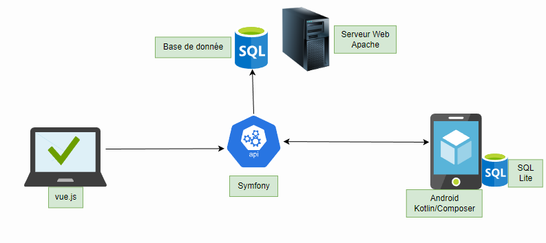
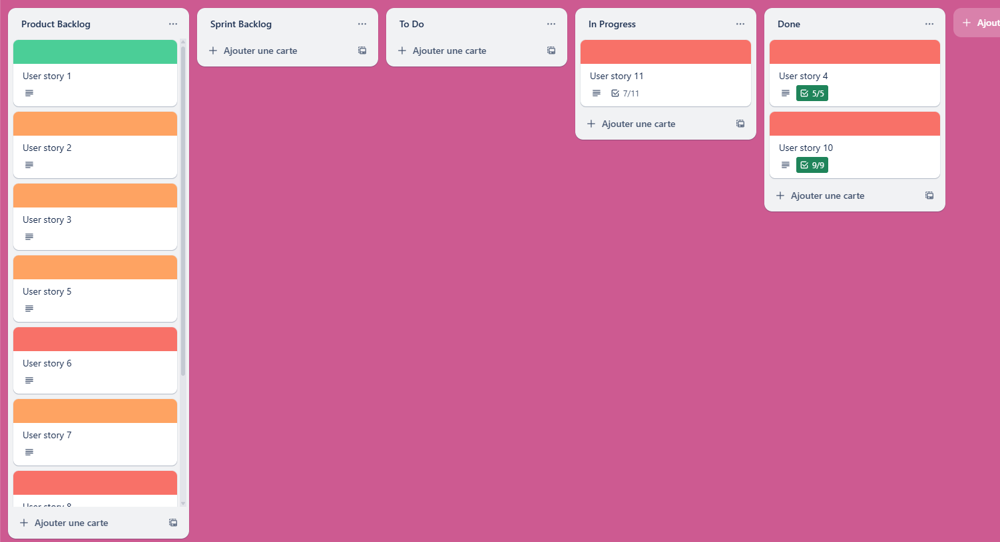
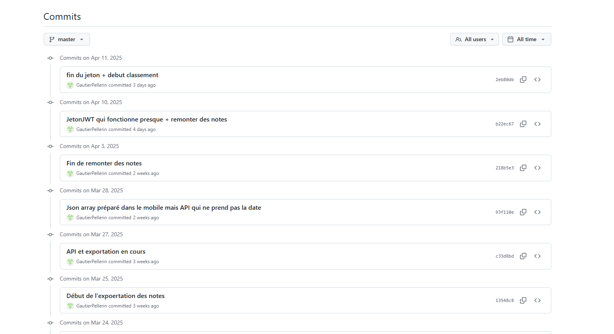
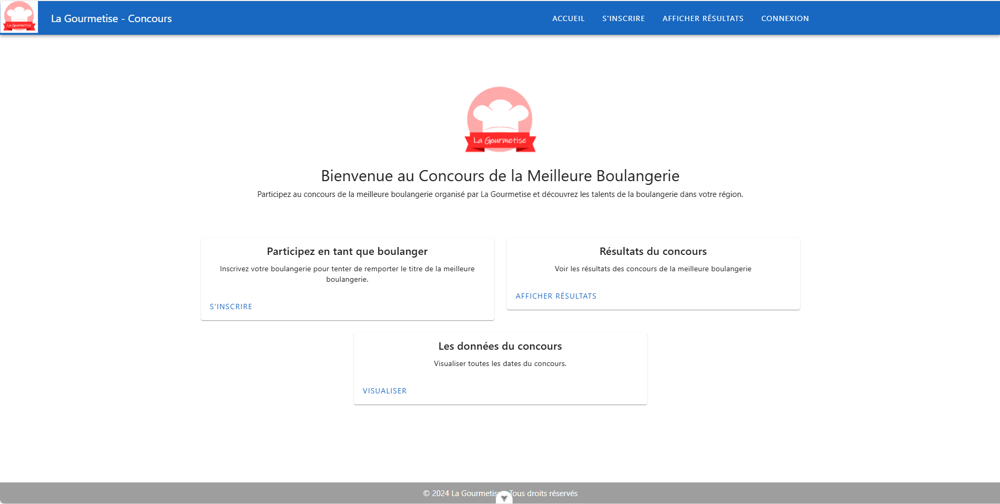
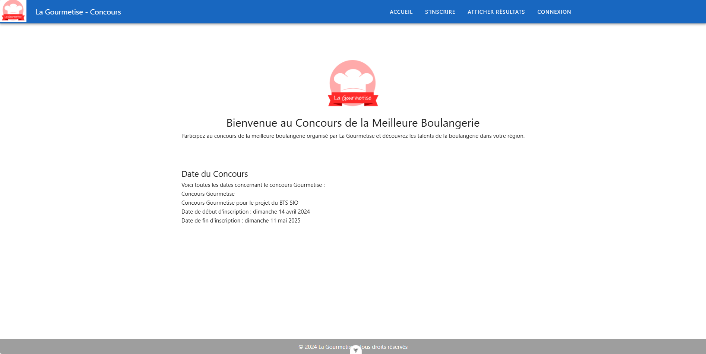
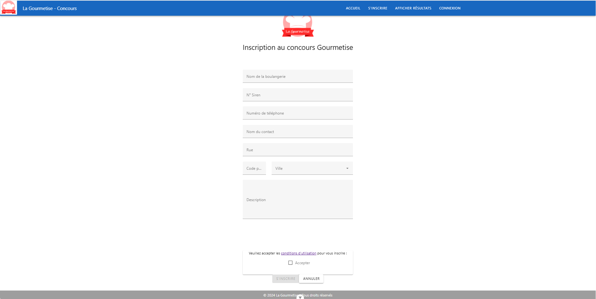
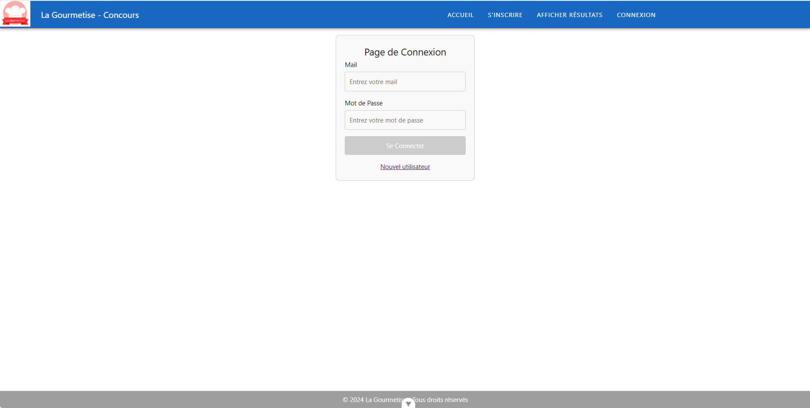
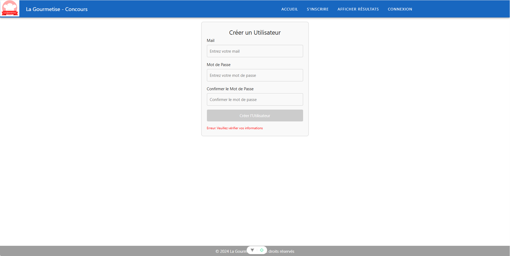

Créer un concours de la meilleure boulangerie avec :
Une application Web qui permet de s'inscrire en tant que boulangerie et de visualiser les résultats
Une application Mobile qui permet aux juges de récupérer la liste des boulangeries, de les noter et de remonter les notes
Une API

Gestion du projet







Bilan Personnel
Ce projet m'a permis de voir comment mettre en place un projet qui contient plusieurs approches selon l'utilisateur.
De plus, la création d'une API concrète était intéressant dans un tel contexte.